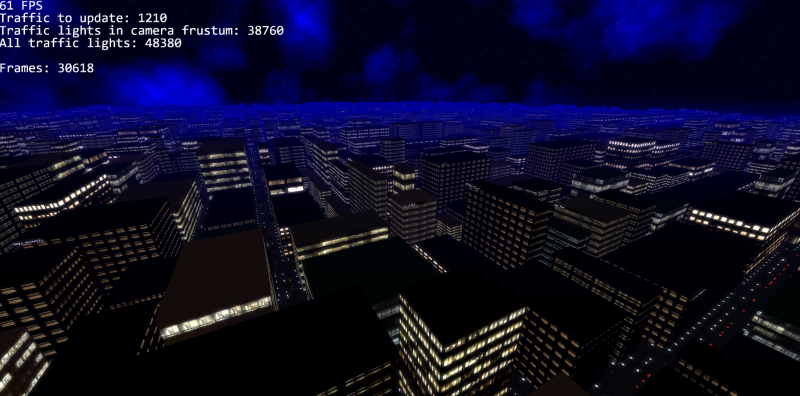
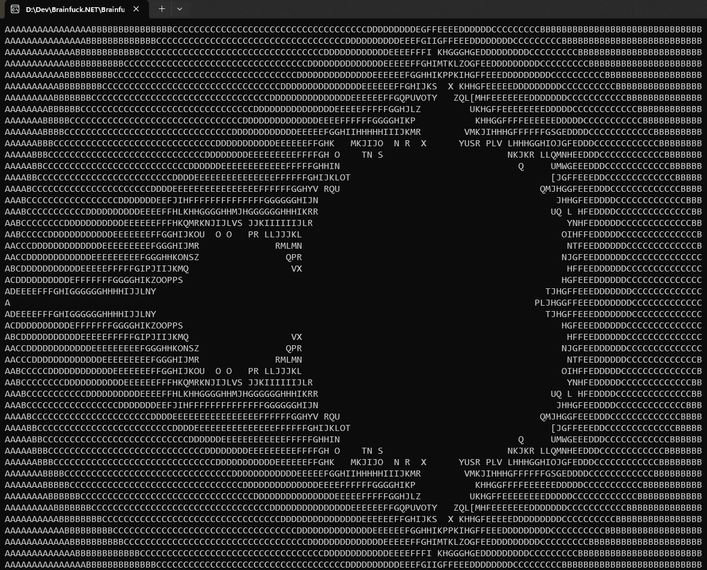
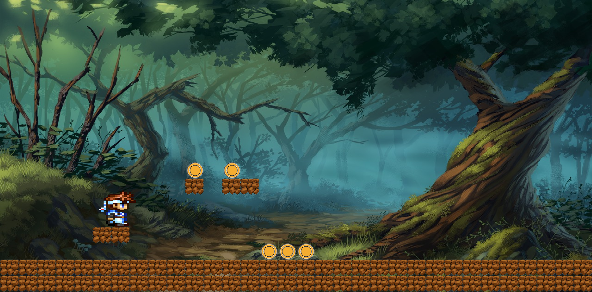

These are little pet projects I had over the years. (At least those that are available on GitHub.) The topics are ranging from computer graphics to emulation. They are in varying state of completion (as most pet projects tend to do).
A procedural city generator written in C# using OpenGL 3.3
Keywords: C#, OpenGL, GLSL, procedural content generation
A WP7 inspired launcher for Android written in Xamarin.
Keywords: C#, Xamarin, Android
A simple file renamer tool to fix filenames in old hungarian RPGMaker2000 games. Unlike most of my pet projects, which are tend to be proof-of-concept projects, while implementing this one, I took a similar approach that I use in my professional work: TDD, tests for everything, service layer, interfaces, DI
Keywords: C#, RPGMaker2000, FluentAssertions
Nes emulator written in C#
Keywords: C#, 6502 CPU, bytecode interpreter, NES
A fun little tool written on a boring afternoon. It translates a Brainfuck program code to .NET IL code. The output is a runnable executable.
Keywords: C#, IL code, brainfuck, compiler
An object oriented XCP (Universal Measurement and Calibration Protocol) implementation. The protocol itself is used by companies in the automotive industry to do measurements and calibrations on ECUs in cars. Written in C++. Most of the mandatory commands are supported (although not every single one).
This was meant to be my MSc thesis, but unfortunatelly it was never fully realized. And wasnt tested on real hardware, only on a simulator.
In spite of this the repository has 80+ stars on GitHub.
Keywords: C++, XCP, automotive
A little webgl experiment. Features batched sprite rendering and sprite animation.
Keywords: WebGL, GLSL, TypeScript
This site itself. I wanted to try what it feels like NOT to use any fancy framework for a simple SPA website. This site uses vanilla JS to do the routing tasks. Now, that routing is working okay, I might write a template engine. Data binding also couldn't hurt...
Keywords: HTML, CSS, JavaScript